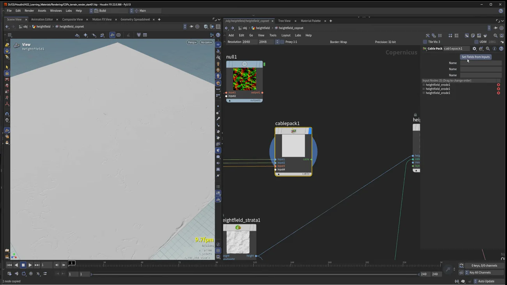
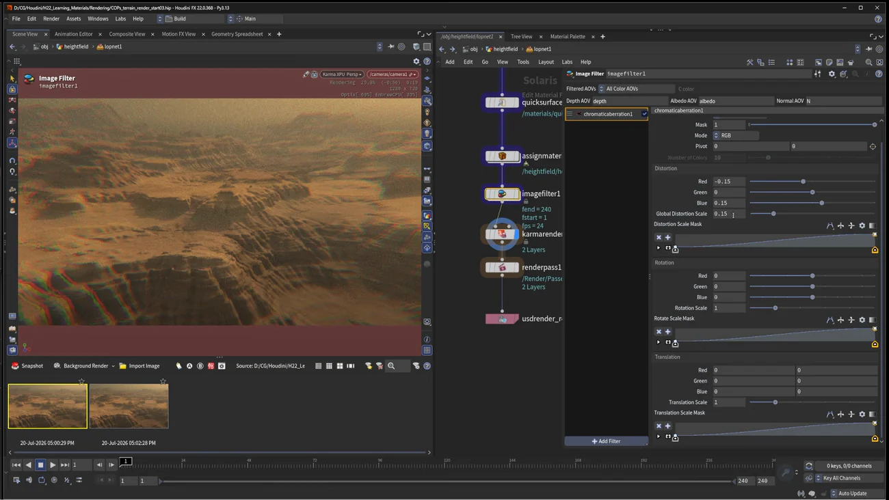

COPs の地形を Solaris でレンダリングする
出典: Houdini 22 | How to Render Terrains in Solaris | Height Fields from COPs to LOPs （SideFX 公式「Houdini 22 How-To」の1本 / Houdini 22 / 18:07 / 英語）。 このページは、上記の動画を見ながら自分用にまとめた日本語の学習メモです。SideFX 公式の翻訳ではありません。
この回の位置
Copernicus で地形を作る回で作った地形を、 レンダリングできる形にして Solaris に持ち込みます。
内容は2本立てです。COPs → LOPs の橋渡しの実務と、 H22 の新しいレンダリング機能（Image Filter）。
1. 解像度を正しい場所で管理する
既定では解像度パラメータが最初の height field レイヤーに付いています。 これをオフにして、COP Network ノード側の Default Resolution をオンにします。
これで COPnet のメニューから 2K / 4K と切り替えるだけで地形のディテール量を変えられます。 最終レンダーは 4K を使います。
なぜ場所を移すのか
解像度をレイヤー側に持たせると、ネットワークの中に入って探さないと変えられません。 COPnet ノードに出しておけば外から一発で切り替えられ、 下書きは 2K・本番は 4K という運用が楽になります。
2. メッシュに変換する
COPnet の出力を中ボタンで確認すると、 これはメッシュではなく height field と color field を含むボリュームです。 このままではレンダリングできません。
Tab → Convert Height Field で内部変換が走り、
400万ポリゴンのメッシュになります。height と Cd が
ジオメトリアトリビュートとして乗ります。
3. 表示フラグに振り回されないようにする
COPnet を選んで Use External COP をオンにします。 ここで指定したノードが、中の表示フラグの位置に関係なく常に上のレベルに出てきます。
オフのままだと、中を見て回ったあとに 意図しないノード（色データなど）が出力されてしまう事故が起きます。
| 手順 |
|---|
1. Height Field Visualize の後に Tab → Null を作り OUT_terrain_for_render と命名 |
2. その Null を選んで Ctrl + C |
3. 上のレベルに戻って External COP の欄で Ctrl + V |
Foundations のレッスン3で出てきた Output ノードと同じ考え方です。「中で何を見ていても、外に出るものは固定する」という発想が Houdini のあちこちに用意されています。
4. 侵食の副産物をマスクとして持ち出す
HF Erode は debris / sediment / flow といった追加フィールドを出しています。 これらはレンダリング時のマスクに使えます。
持ち出すには Height Field Visualize の layers 入力に繋ぎます。 ただし1本しか繋げないので、まとめる必要があります。
Yで余計なノードを外しますTab→ Cable Pack。debris / sediment / flow を入力に繋ぎます- Set Fields from Inputs を押すのが重要です。 名前が付き、アトリビュートがその名前を継承します
- パックした cable を layers に繋ぎます

U で上がって Convert Height Field を中ボタンで見ると、追加アトリビュートが全部乗っています。
「侵食シミュレーションの途中の値を、マテリアルのマスクとして使う」という発想が良いなと思いました。 岩肌と堆積物を塗り分けるのに、わざわざマスクを描く必要がありません。
5. Solaris に持ち込む
Tab→Nullで出力チェックポイント（OUT_terrain_for_solaris）を作ります- Solaris へ行くのは2通り。パンくずの
objをクリック＆ホールドしてstageを選ぶ、 またはTab→ LOP Network Tab→ Scene Import All で地形が入ります。 オブジェクトが複数あるなら except pattern で絞り込めます
6. 空と大気
Tab→ Karma Physical Sky を繋ぎます- 角度を決めてからそのビューからカメラを作ります （作った直後はロックされているので、動かしたければロックアイコンを外します）
- Karma XPU でテストレンダー。ライトが見えないときは Scene Lights のプレビューを確認します
| 設定 | この例の値 |
|---|---|
| Intensity | 2.5 |
| Solar Altitude | 30 |
| Sky Mode の Dome Light | Atmospheric（遠景の霞を作るため） |
| Rayleigh Scale | かなり高めに |
| Scatter Distribution | 6.25 |
| Solar Azimuth（最終） | 30 度（画面右から陽が当たる） |
スケールが合っていないと大気が効かない
ここが実務的に大事な話です。地形が現実のスケールに近くないと、大気の効果が正しく出ません。
この例の地形を中ボタンで確認すると 1km × 1km でした。 砂漠の広がりとしては小さすぎるので、5倍にスケールします。
| つまずき | 対処 |
|---|---|
| Transform を置いて Uniform Scale を 5 にしても何も起きない | Primitives の欄で「all mesh primitives」を選びます。 何を変形するのか指定しないと Transform は動きません |
スケールすると大気が地形を覆う様子が一気に自然になります。 遠景に霞がかかるのは、距離が現実的になったからです。
最終構図では Y 軸に −90 度回転も加えています。
7. マテリアル
Tab→ Quick Surface Material を置きます- マテリアルを選んで地形にドラッグ＆ドロップします。
どのジオメトリプリムに当てるか聞かれるので
heightを選びます
当てた直後はやたらツヤツヤになります。 Quick Surface Material は既定で display color アトリビュートを読みますが、 スペキュラとラフネスが砂漠の岩には合っていないためです。
Roughness を上げます（この例では 175 相当まで）。これで一気に岩らしくなります。
Quick Surface Material の中身については Summon VFX の第4回ではなく Foundations のレッスン5にまとめています。 同梱の USD を参照する仕組みなので、クックが速いという性質があります。
8. 2K と 4K を見比べる
レンダー前にスナップショットを撮って比較します。
- 今（2K）の状態でスナップショットを撮ります
- Scene Import All から OBJ に飛び、height field の COPnet を 4K にします
- Karma を再スタートしてもう1枚スナップショット
- 2枚をダブルクリックすると比較ウィンドウが開きます
侵食のディテールがはっきり変わります。 講師は「8K ならさらに上がる」とも言っています。 第1節で解像度を COPnet に出しておいたのが、ここで効いてきます。
9. Karma と Image Filter（H22 の新機能）
Tab→ Karma Setup。シェーダのプリコンパイルを聞かれますが、 Quick Surface Material 1枚だけなので precompile しないで進めます- Assign Material を Karma Render Settings に繋ぎ、表示フラグを Karma Render Settings に立てます
- カメラ名が自分のカメラと一致しているか確認します（これで使うカメラが決まります）

Filters の + を押すと Image Filter が追加できます。
レンダー前に画像に効果を足せます。
| フィルタ | この例の値 |
|---|---|
| Chromatic Aberration | 既定は強すぎるので Global Distortion を 10 で割ります |
| Vignetting | 0.75 / 1.25 / 全体 0.5 |
| Tone Mapping | ACES Filmic。映画寄りの絵になります |
あとは Render to MPlay または Render to Disk で完成です。
音声では ACES Filmic が「Asus Filmic」のように聞こえますが、ACES Filmic です。
この回のまとめ
- 解像度はCOPnet 側の Default Resolution に出します。外から 2K / 4K を切り替えられます
- COPnet の出力はメッシュではなくボリュームです。Convert Height Field でメッシュ化します（この例で400万ポリゴン）
- Use External COP をオンにすると、中の表示フラグに関係なく指定したノードが外に出ます
- HF Erode の debris / sediment / flow は Cable Pack でまとめて持ち出せます。Set Fields from Inputs を押すのが要点です
- 大気を効かせるには地形が現実のスケールに近い必要があります。この例では 1km を5倍に
- Transform で何も起きないときは Primitives に「all mesh primitives」を指定します
- Quick Surface Material は display color を読みます。当てた直後のツヤは Roughness で落とします
- スナップショットで 2K と 4K を比較できます
- H22 の Image Filter で chromatic aberration / vignetting / ACES Filmic のトーンマッピングを足せます